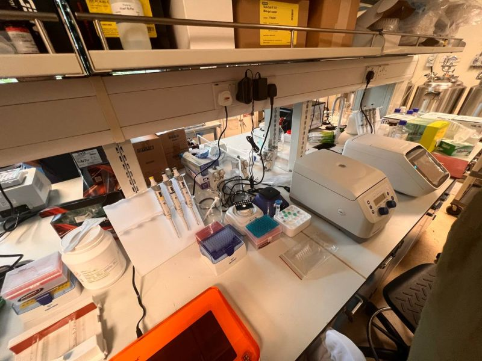

TWelcome to the meticulously crafted online resume of Sean Leinard, a dynamic and aspiring professional with a keen interest in data-driven innovation. This portfolio was thoughtfully developed with the assistance of ChatGPT to showcase my achievements, skills, and experiences. Navigate effortlessly using the icons above to explore my journey.

Diploma in CBE
NS in SPF

Passion

What I Have Done So Far
A highly motivated and intellectually curious individual with a strong analytical mindset, continuously striving to expand my knowledge and deepen my understanding across various domains. Passionate about uncovering insights, solving complex challenges, and applying critical thinking to real-world scenarios.
I thrive on tackling intricate problems and devising innovative solutions, particularly within the realms of data science, artificial intelligence, and emerging technologies. Engaging in hands-on projects allows me to refine my technical expertise while fostering creativity and adaptability in an ever-evolving digital landscape.

Intern Special Award: Achieved distinguished recognition for demonstrating exceptional performance, unwavering dedication, and a results-oriented mindset during my internship at XYZ Company. This award highlights my ability to exceed expectations, contribute meaningfully to projects, and deliver tangible outcomes in a fast-paced, professional environment.
Ngee Ann Taekwondo POL-ITE Competition: Earned a commendable 2nd place victory in a highly competitive regional Taekwondo tournament, showcasing my commitment to discipline, resilience, and continuous self-improvement. This achievement reflects my perseverance, strategic thinking, and ability to excel under pressure.
Industry Immersion Programme: Successfully completed an intensive 6-month-long industry immersion program with a specialized focus on data analytics and artificial intelligence. This experience enabled me to gain hands-on exposure to industry-standard technologies, analytical methodologies, and problem-solving techniques, solidifying my ability to translate theoretical knowledge into impactful, real-world applications.

Available upon request